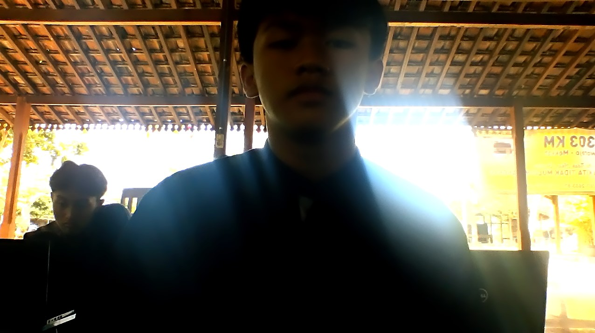

Tentang saya
Saya lahir di Sukabumi, Jawa Barat, pada september 2009, saya seorang pelajar dari SMA IT HSI Boarding school, minat saya menjadi seorang pembisnis.
Skill Unggulan
- bisa olahraga Gym
- bisa gambar
- bisa ngerti automotif
Riwayat Pendidikan
| Jenjang | Nama Sekolah | Tahun |
|---|---|---|
| SMA | HSI BOARDING SCHOOL | 2024-2025 |
| SMP | UMAR BIN AL-KHATTAB | 2021-2024 |